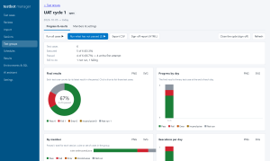
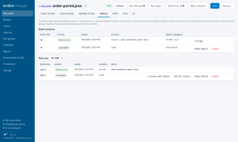
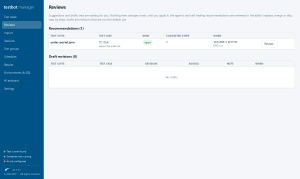

Change is safe only when the whole process is retested
2026-10-05
The problem
Build from scratch, improve what exists, or add one new feature: the result is the same. A change in one place can break a process that worked yesterday, and if nobody retested it before release, production is the test.
What is Testbot
Testbot tests an application from the first release through every improvement: the web UI, the APIs and messages behind it, and the data they leave behind. Agentic AI writes and maintains the tests, and people stay in charge of what runs.One test follows the whole business flow
A test case is not limited to the screen. It can cross every layer a real transaction touches.
UI: click "Release order"→Message bus: wait for the event
MQTT · RabbitMQ (AMQP) · Kafka→REST: check the order state→Database: verify the saved row
One case, one report: expected against actual for every check, and a screenshot of every UI step.
Across the life of the application
- Build
- Improve
- Release
- Maintain
What a tester gets
Repeatable
The same case runs the same way each time. Unique test data per run, and secrets are kept out of reports and scripts.Evidence
HTML and JUnit reports, step screenshots, expected/actual values, and a final result with its final test time for every case.Traceability
See every run and session a case took part in, which revision ran, and which suite, session or group it belongs to.Control
Run chosen cases in your order, across files, with a failure policy (stop or continue). Email when a session or group completes.How the AI is used, and how far it is trusted
The agent looks at the page, decides, acts and checks, in a loop. A verdict is accepted only when the evidence supports it.
| Verdict | When |
|---|---|
| pass | Every stated outcome is proven by a passing check, and no server error or error message is left on screen. |
| fail | A check failed, or an error appeared. A failure with no failed check behind it is marked AI judgement only. |
| inconclusive | The agent could not finish or could not verify an outcome. It is never shown as a pass. |
| Risk | Protection |
|---|---|
| Wandering to other sites | Only the test's own site is allowed, unless you add hosts. |
| Destructive actions | Delete, pay, send, approve and similar clicks are refused unless the objective asks for them. |
| Changing data | Database access is read-only (SELECT). |
| Secrets | Passwords exist only as variables; their values are never shown to the model. |
| Prompt injection from page text | Page content is treated as untrusted data; the tool and site limits apply whatever a page says. |
| Runaway cost | Limits on actions, tokens and time; loops are detected. |
AI that proposes, people that decide
- Plain-language tests: describe the objective; the agent finds the elements and performs it.
- Run to script: a passing agentic run is exported as a normal scripted test, to review and replay with no AI.
- Chat: create or change test cases by conversation. You see a step-by-step diff, then apply it or keep it as a draft.
- Recommendations and self-healing: after a passing run, or when a target stops matching, the agent suggests steps or a corrected target. You replace, merge or skip.
- Revisions: every change is kept at suite and case level. Only the default revision runs, so an AI proposal never changes a test by itself.
Status: the agentic features are a pilot. The apps, the REST and message-bus steps, and the scripted runner are the established part; use the AI to propose and review.
Three apps, one folder
testbot
The runner, for the command line and build pipelines.testbot recorder
Use the application and it writes the test.testbot manager
Browser UI to edit, import, schedule and analyse.In the test bot manager

A UAT cycle: final results, progress by day, run what has not passed, sign-off.
Revision history: only the default revision runs; compare, edit or roll back.
Reviews: agent recommendations and draft revisions waiting for a decision.